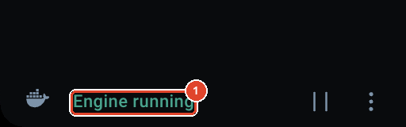
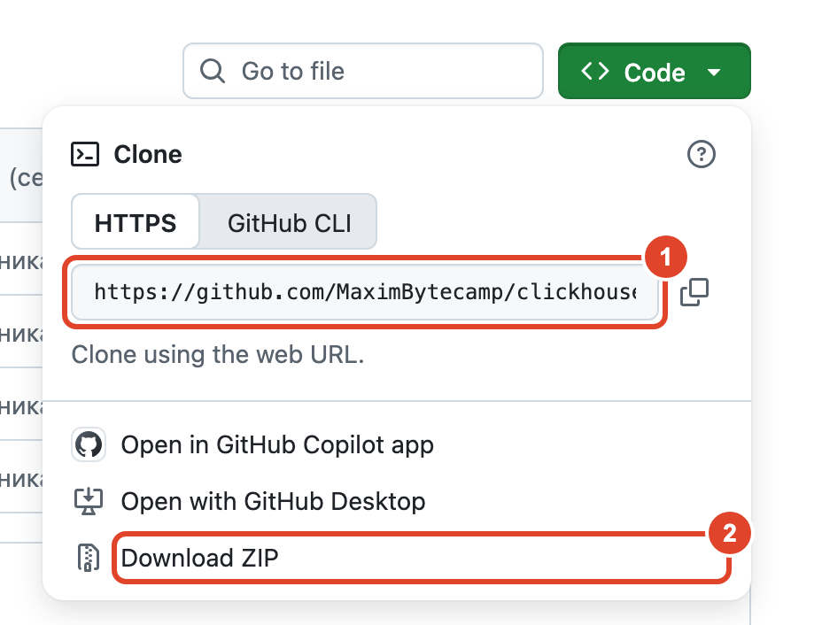
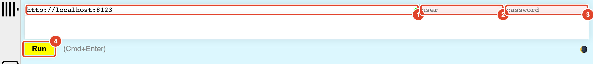
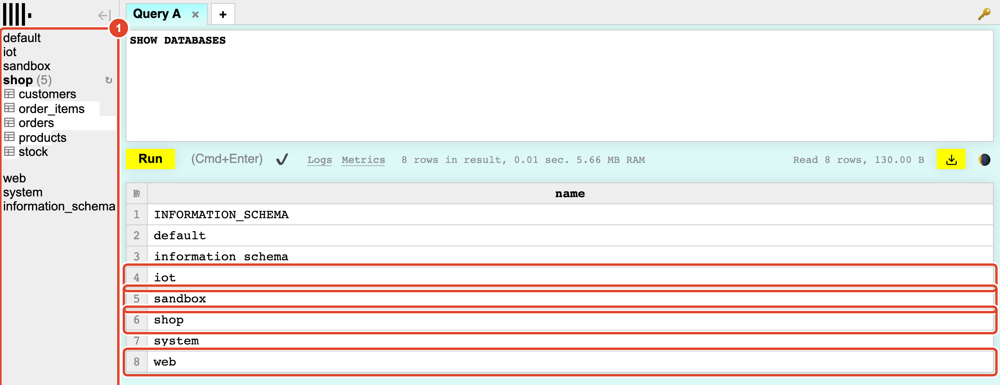
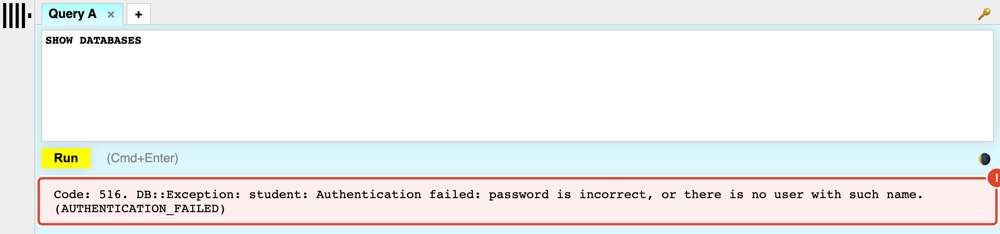

Справочник по ClickHouse · модуль 0 · рабочее место
Глава 0.1
Стенд:
Docker и базы
Чтобы выполнять примеры книги, нужен работающий сервер с таблицами для упражнений. Подготовим его на вашем компьютере и проверим ответ сервера отдельно от результата загрузки данных.
- Категория
- Подготовка рабочего места
- Уровень
- Первое знакомство со стендом
- Результат
- Сервер отвечает, семь таблиц стенда проверены
- Понадобится
- Интернет, Docker с Compose, браузер и терминал
Суть за две минуты
Проверить Docker и скачать описание стенда. Сам сервер Docker получит при запуске.
Запущенный сервер ещё не означает загруженные таблицы. Для них есть отдельный загрузчик.
Сопоставить журнал, состояние контейнеров и результат запроса. Эти признаки определяют следующий шаг.
§1Что готовим и что скачиваем
Зачем этот шагРазделим программы, которые должны быть установлены, и файлы, которые достаточно распаковать.
Стенд — сервер определённой версии, настройки его запуска и набор данных для упражнений. Здесь используется ClickHouse 26.8.36.3. Исходные числа книги относятся к этому набору до изменений, внесённых упражнениями.
До запуска нужны Docker — средство запуска программ в контейнерах — и Docker Compose — его компонент, который собирает стенд по файлу compose.yaml. На Windows и macOS они входят в Docker Desktop; на Linux устанавливаются Docker Engine и плагин Compose. Установка ClickHouse непосредственно в систему не требуется.
Скачивать будем репозиторий clickhouse-practice: папку проекта с compose.yaml, настройками и скриптами наполнения. В архиве нет готового сервера и миллионов строк: Docker скачает сервер отдельно, а скрипты создадут данные. Git нужен только для способа скачивания через git clone; для ZIP он не требуется.
Место на диске и время первого запуска
Нужен запас места не только для архива: Docker хранит скачанные файлы сервера, файлы таблиц и временные файлы загрузки. Если свободного места мало, освободите его до запуска; маленький ZIP не показывает будущий размер стенда.
Первый запуск включает скачивание образа и вычисление данных. Его длительность зависит от сети, процессора, диска и ресурсов Docker. Если загрузка завершается ошибкой нехватки памяти или места, увеличение времени ожидания её не исправит: сначала устраните причину из журнала.
§2Что запускает стенд
Зачем это знатьПосле запуска один контейнер должен работать постоянно, а другой — завершиться. Завершение загрузчика с кодом 0 подтверждает выполнение его задачи.
Образ — готовый шаблон с программой и необходимыми ей файлами. Из него Docker создаёт контейнер — отдельную среду выполнения программы. Контейнеры этого стенда рассчитаны на Linux. На Windows и macOS нужную среду обеспечивает Docker Desktop.
В compose.yaml постоянный сервер назван clickhouse, а загрузчик — seed. Это имена сервисов, по которым Compose выбирает часть стенда в командах. Контейнер сервера имеет другое имя — course-clickhouse. Файлы баз хранятся в томе: отдельном хранилище Docker, которое не исчезает при удалении контейнера.
Для проверки сервер выполняет SELECT 1 — запрос, который возвращает число 1 без чтения таблиц. На схеме проследите две связи: когда загрузчику разрешено начать работу и где остаются записанные им данные.
- Образ ClickHouse 26.8.36.3 → сервер
clickhouseКонтейнерcourse-clickhouseначинает принимать запросы. ПроверкаSELECT 1возвращает1→ статусhealthy. healthy→ загрузчикseedИз того же образа запускается отдельный контейнер. Он передаёт серверу команды создания баз и заполнения таблиц.- Сервер → том
clickhouse-dataФайлы таблиц записаны отдельно от контейнеров. Загрузчик завершает работу, сервер остаётся запущенным.
clickhouse-practice_clickhouse-data.Стрелка от healthy к seed показывает условие запуска загрузчика. Последняя стрелка показывает, куда сервер записывает файлы. Статус healthy подтверждает только способность сервера выполнить короткий запрос. Данные в этот момент могут ещё вычисляться. Их готовность проверим по завершению seed и содержимому таблиц.
По-простому: оборудование и рабочие записи
В мастерской оборудование устанавливают по инструкции, а рабочие записи держат в отдельном шкафу. Замена оборудования сама по себе не уничтожает записи; выбросить шкаф — другое действие.
Что есть что: инструкция с комплектом оборудования — образ; подготовленное рабочее место — контейнер; шкаф с записями — том. Граница аналогии: том не является резервной копией. Команды сервера могут менять его содержимое, а явное удаление тома уничтожает файлы.
Описание стенда определяет порядок запуска. Чтобы выполнить его на компьютере, сначала проверим Docker.
§3Проверка Docker
Зачем этот шагДо скачивания стенда убедимся, что команда Docker доступна и её движок работает.
Если Docker ещё не установлен, пройдите главу 0.1а: Windows, Docker Desktop и WSL 2. Затем запустите Docker Desktop и откройте PowerShell. Установку и исправление WSL здесь не повторяем.
Если Docker ещё не установлен, выберите сборку для своего процессора в официальной инструкции Docker Desktop для Mac: Apple Silicon или Intel. После установки запустите Docker Desktop и откройте приложение «Терминал».
Если Docker ещё не установлен, выберите свой дистрибутив в официальной инструкции Docker Engine и установите также плагин Compose. Движок должен быть запущен, а у вашей учётной записи должно быть право выполнять команды Docker.

В терминале компьютера выполните две команды. Пока их можно выполнять из любой папки:
docker version docker compose version
У docker version должны быть блоки Client и Server: первый подтверждает наличие команды, второй — связь с движком. Вторая команда должна напечатать версию Compose. Номера версий Docker могут отличаться от показанных в книге.
- Команда не найдена: проверьте установку; после установки откройте новое окно терминала.
- Есть Client, но вместо Server ошибка подключения: запустите Docker Desktop или службу Docker Engine. Не переходите к запуску стенда, пока Server не появился.
- Docker отвечает, а Compose не найден: установите плагин Compose; наличие одной команды Docker недостаточно.
показаны Client, Server и версия Compose. Терминал остаётся открытым для следующих шагов.
§4Скачать файлы и выбрать папку для команд
Зачем этот шагПеред запуском проверим, что текущая папка содержит описание стенда.
- Откройте репозиторийgithub.com/MaximBytecamp/clickhouse-practice. Кнопка Code открывает меню скачивания.

GitHub · кнопка Code над файлами стенда. - Выберите один способ скачиванияБез Git нажмите Download ZIP и полностью распакуйте архив. Не запускайте команды из окна просмотра ZIP. Прямая ссылка на тот же архив: скачать main.zip.

GitHub · способ 1 требует установленного Git, способ 2 — нет. Если Git установлен, вместо ZIP выполните в папке, где хотите разместить проект:
git cloneскачает его в новую подпапку,cdсделает её текущей.PowerShell / терминалтолько для способа через Git git clone https://github.com/MaximBytecamp/clickhouse-practice.git cd clickhouse-practice
- Для ZIP перейдите в распакованную папкуНайдите в ней
compose.yamlи используйтеcdс путём к этой папке. Ниже примеры для стандартных «Загрузок»; если распаковали в другое место, замените путь.PowerShellесли «Извлечь всё» создало вложенную папку cd "$HOME\Downloads\clickhouse-practice-main\clickhouse-practice-main"
Терминалесли архив распакован прямо в Downloads cd ~/Downloads/clickhouse-practice-main
В Windows одинаковое имя папки иногда встречается в пути дважды: внешнюю создаёт распаковщик, внутренняя уже есть в архиве. Выберите папку, в которой находится файл
compose.yaml.
Проверьте текущую папку: pwd показывает её путь, ls — содержимое. В PowerShell работают обе команды; вместо ls можно использовать dir.
pwd ls docker compose config --quiet
Последняя команда проверяет, что Compose нашёл и смог прочитать конфигурацию; при успехе она ничего не печатает. Она ещё не запускает контейнеры.
в списке есть compose.yaml, README.md и stend, а проверка конфигурации завершилась без ошибки. Все дальнейшие команды docker compose выполняйте здесь.
§5Запустить и дождаться загрузки
Зачем этот шагОтделим успешный запуск программы от окончания наполнения таблиц стенда.
Команда up создаёт и запускает сервисы из compose.yaml; -d оставляет их работать в фоне и возвращает приглашение терминала.
docker compose up -d
При первом запуске видны строки скачивания образа. Затем Compose создаёт контейнеры. Запуск seed разрешён после успешной проверки сервера. Возврат приглашения терминала или строка Started у загрузчика не означают, что таблицы уже заполнены.
Посмотрите журнал загрузчика и состояния всех контейнеров. logs печатает журнал, ps показывает состояния, а -a добавляет уже завершившиеся контейнеры:
docker compose logs seed docker compose ps -a
Это снимок состояния, не непрерывное наблюдение. Если загрузка ещё идёт, повторяйте обе команды. Указание «около минуты» в журнале — приблизительная оценка загрузчика. На вашем компьютере генерация может занять больше времени.
| Что видно | Что означает | Что делать |
|---|---|---|
Сервер starting, в журнале seed пока пусто | Сервер ещё не прошёл проверку; запуск загрузчика отложен | Повторить проверку. Если сервер стал unhealthy или завершился, читать его журнал, см. §8 |
Сервер healthy, seed Up; в журнале генерация web.events или iot.readings | Сервер отвечает, данные ещё загружаются | Ждать, повторять журнал и состояния; не запускать reset параллельно |
В журнале «Готово: базы shop, web, iot и пустая sandbox», seed Exited (0) | Загрузчик завершился без ошибки | Перейти к проверке таблиц |
«Базы уже загружены…», seed Exited (0) | Загрузчик пропустил наполнение | Тоже проверить таблицы: это не проверка их полноты |
Seed Exited с ненулевым кодом | Загрузка прервалась | Прочитать ошибку в журнале seed; завершённый процесс самостоятельно не продолжится |
Журнал успешного первого наполнения
seed-1 | shop.products 21 строк seed-1 | shop.stock 42 строк seed-1 | shop.customers 20 строк seed-1 | shop.orders 120 строк seed-1 | shop.order_items 271 строк seed-1 | web.events: генерация, около минуты… seed-1 | web.events 10324592 строк seed-1 | iot.readings: генерация… seed-1 | iot.readings 3174480 строк seed-1 | Готово: базы shop, web, iot и пустая sandbox
Ограничение повторного запуска. Загрузчик пропускает наполнение, если в shop.orders уже есть хотя бы одна строка. Если первый запуск прервался после загрузки магазина, повторный запуск может сообщить «Базы уже загружены», хотя web или iot неполны. Для перехода к упражнениям дополнительно проверьте таблицы.
сервер имеет статус healthy, загрузчик — Exited (0). Теперь проверяем содержимое баз.
§6Проверить сервер и таблицы
Зачем этот шагОтвет на короткий запрос проверяет соединение, а сопоставление числа строк — результат наполнения.
Откройте http://localhost:8123/play. Play UI — встроенная в сервер страница для запросов. localhost означает ваш компьютер; порт 8123 — номер точки подключения. Compose настроен передавать соединения с этого порта компьютера серверу в контейнере. Если страница не открылась, проверьте состояние сервера и занятость порта в §8. Проверка пароля возможна только после соединения с сервером.
- Заполните поля входаАдрес сервера —
http://localhost:8123(1), пользователь —student(2), пароль —student(3). Здесь не нужна учётная запись GitHub или Docker.
Play UI · поля подключения и кнопка запуска. Если поля скрыты, откройте их значком ключа справа вверху. - Проверьте ответ сервераВ большое поле вставьте уже знакомый проверочный запрос
SELECT 1. Нажмите Run (4). Ожидается одна строка со значением1. Такой ответ подтверждает, что адрес и вход работают, но ничего не говорит о наполнении таблиц. - Проверьте наличие базЗамените текст на
SHOW DATABASES— «показать базы» — и снова нажмите Run.
Ответ сервера · среди служебных баз должны быть iot, sandbox, shop и web. Открытая боковая панель не обязательна для проверки. - Проверьте все семь таблиц стендаСледующий диагностический запрос читает
system.tables, служебный список таблиц сервера. Он выбирает три базы стенда и показывает их имена, таблицы и число строкtotal_rows. Для этой проверки достаточно выполнить запрос целиком и сравнить результат с образцом.Play UIзаменить предыдущий запрос целиком SELECT database, name AS table, total_rows FROM system.tables WHERE database IN ('shop', 'web', 'iot') ORDER BY database, table
Play UI · контрольные числа после полного наполнения. Рамка 1 — iot.readings, рамка 2 — web.events.
| База и таблица | Что хранится | Ожидается строк |
|---|---|---|
iot.readings | Замеры датчиков на складах | 3 174 480 |
shop.customers | Покупатели | 20 |
shop.order_items | Позиции заказов | 271 |
shop.orders | Заказы | 120 |
shop.products | Товары | 21 |
shop.stock | Остатки на складах | 42 |
web.events | Действия посетителей сайта | 10 324 592 |
База sandbox предназначена для ваших упражнений и после первого наполнения пуста, поэтому строк в этом списке для неё нет. Остальные базы, например system и default, созданы самим сервером.
короткий запрос вернул 1, присутствуют четыре базы стенда, а все семь строк проверки совпали с таблицей выше. Проверены состав и количество строк; содержимое каждой строки такой запрос не сравнивает. Если вы уже меняли данные упражнениями, исходные числа могут отличаться.
Проверка без браузера и переход к клиентам
В контейнере уже установлен clickhouse-client — программа для запросов из терминала. exec запускает её в работающем сервисе clickhouse. Флаг -q передаёт один запрос. После ответа клиент завершится. Настройки входа уже записаны в стенде.
docker compose exec clickhouse clickhouse-client -q "SELECT 1"
Ожидается 1. Если команда работает, а Play UI недоступен, сам сервер отвечает: проверяйте адрес и порт браузера. Запуск интерактивного клиента, редактирование запросов и другие способы подключения — в главе 0.2 «Клиенты».
§7Остановить, сбросить или удалить
Зачем этот шагВ конце занятия нужно остановить сервер, не стирая выполненные упражнения.
Сравните два объекта: контейнер с программой и том с файлами. Таблица показывает, какие из них меняет каждая команда.
| Действие | Контейнер сервера | Данные на томе |
|---|---|---|
stop | Остановлен, сохранён | Сохранены |
down | Удалён | Сохранены |
run --rm reset | Работает | Четыре базы пересозданы |
down -v | Удалён | Том удалён целиком |
При stop и down меняется состояние программы; файлы доступны при следующем запуске. Reset меняет содержимое тома, а down -v удаляет само хранилище. Команду выбирают по тому, что требуется сохранить.
Для обычной остановки используйте stop. Контейнеры и том остаются. Проверьте состояние с ps -a: сервер должен перейти в Exited.
docker compose stop docker compose ps -a
Чтобы продолжить работу, выполните уже знакомую docker compose up -d. После появления healthy повторите запрос проверки. Команда docker compose down тоже сохраняет данные, но удаляет контейнеры и сеть проекта. После неё ps -a не показывает контейнеров стенда; следующий up -d создаст их заново и подключит прежний том.
Сброс уничтожает изменения в четырёх базах стенда. Следующая команда перезаписывает базы shop, web, iot исходными данными и удаляет с пересозданием sandbox. Таблицы и результаты упражнений в этих четырёх базах будут потеряны. Сохраните нужные результаты до запуска. Базы с другими именами этот скрипт не пересоздаёт.
docker compose run --rm reset
run запускает разовую задачу, --rm удаляет только её контейнер после завершения. Перезапись данных выполняется командами внутри скрипта reset. Ждите завершения команды и строки «Готово», затем повторите проверку семи таблиц. Не запускайте reset одновременно с seed или другой загрузкой.
Удаление тома уничтожает все базы в нём, в том числе созданные вами. Флаг -v у down удаляет хранилище стенда. Данные потребуется сохранить отдельно до удаления тома.
docker compose down -v
Признак удаления — строка Volume … Removed. Следующий up -d создаст пустой том, и seed загрузит исходные данные заново; ваши собственные данные из удалённого тома не восстановятся. Скачанный образ сервера эта команда не удаляет.
после обычной остановки сервер не работает; при возобновлении подключается тот же том. Если требовалось только закончить занятие, команды reset и down -v не нужны.
§8Частые ошибки
Выбирайте действие по наблюдаемому признаку. Не исправляйте ошибку подключения удалением данных.
Compose не находит конфигурацию
Выполните pwd и ls. Если нет compose.yaml, перейдите в распакованную папку по §4. Не создавайте новый файл с таким именем: нужен тот, который пришёл со стендом.
Сервер unhealthy, завершился или постоянно перезапускается
Причину остановки сервера ищите в его журнале:
docker compose logs clickhouse
Если журнал указывает на нехватку места или памяти, устраните эту причину, затем повторите запуск. Если причина неясна, сохраните текст ошибки и вывод docker compose ps -a для преподавателя. Не выполняйте сброс наугад.
Порт 8123 или 9000 уже занят
В сообщении Docker есть занятый порт и указание на невозможность его привязать. Создайте рядом с compose.yaml текстовый файл .env (не .env.txt). Для смены порта браузера добавьте HTTP_PORT=8124, для второго порта — NATIVE_PORT=9001; нужны только строки для занятых портов.
Снова выполните docker compose up -d. При HTTP_PORT=8124 открывайте http://localhost:8124/play и указывайте http://localhost:8124 в поле адреса Play UI. Внутри контейнера порты не меняются; команда проверки через exec остаётся прежней.
Имя course-clickhouse уже занято
Сообщение о конфликте имени контейнера означает, что такой контейнер уже существует. Используйте прежнюю папку стенда. Не удаляйте контейнер, если не знаете, кому он принадлежит: передайте сообщение преподавателю. В конфигурации задано фиксированное имя, поэтому скачивание второй копии или другое имя проекта не создаёт независимый стенд.
Seed завершился с ошибкой, а повторный запуск сообщает «Базы уже загружены»
Заказы уже записаны, поэтому повторное наполнение пропущено. Посмотрите журнал первоначальной ошибки и контрольные числа. После устранения причины вернуть исходные четыре базы можно сбросом из §7, только если вы согласны потерять изменения в них. Если результаты упражнений нужно сохранить, сначала сохраните их с преподавателем. Само повторение up -d неполную загрузку не исправляет.
Таблицы нет или строк меньше ожидаемого
Пока seed имеет состояние Up, это может быть незавершённая загрузка — смотрите его журнал. Если seed уже завершился, бесконечное ожидание не поможет: проверьте код завершения и предыдущую ошибку. При успешном завершении причиной могут быть ваши изменения или неполный прошлый запуск, пропущенный по наличию заказов.
Play UI показывает AUTHENTICATION_FAILED, код 516
Ответ получен от сервера, но вход отклонён. Откройте поля значком ключа и проверьте оба значения: student и student строчными латинскими буквами.

Проверка через exec не запускается: сервис не работает
Посмотрите docker compose ps -a. После обычной остановки нужен docker compose up -d; если сервер завершился из-за ошибки, сначала читайте его журнал. Не вводите SQL непосредственно в PowerShell: запрос выполняется в Play UI или передаётся программе clickhouse-client.
§9Самопроверка
Сервер healthy, а seed ещё Up. Можно начинать упражнение по web.events?
Нет. Healthy подтверждает короткий ответ сервера, но не окончание загрузки. Нужно дождаться успешного завершения seed и проверить число строк: таблица может существовать уже во время наполнения.
Журнал пишет «Базы уже загружены», но проверка вернула только пять таблиц shop. Как объяснить результат?
Загрузчик увидел строки в shop.orders и пропустил наполнение. Это возможно после прерывания первого запуска до создания web и iot. Нужно найти и устранить причину прерывания; повторять запуск без диагностики недостаточно. Сброс допустим только с учётом потери изменений.
После down вы снова выполнили up -d из той же папки. Почему упражнение в sandbox осталось?
Контейнер был создан заново, но подключён прежний том. В нём лежат файлы sandbox. Загрузчик при наличии заказов пропускает наполнение и не пересоздаёт песочницу.
Вы сменили HTTP_PORT на 8124. Проверка через exec возвращает 1, а старый адрес браузера не открывается. Что исправить?
Поменять адрес страницы на localhost:8124/play и поле адреса сервера на http://localhost:8124. Exec запускает клиент внутри контейнера и не использует изменённый внешний HTTP-порт, поэтому его успех не подтверждает правильность адреса в браузере.
Самостоятельная задача: закончить занятие и продолжить
На готовом стенде сохраните результат проверки семи таблиц — снимком области результата или текстом. Остановите стенд без сброса. Убедитесь по состоянию контейнеров, что сервер не работает. Затем возобновите работу и повторите тот же запрос.
Что предъявить: путь папки с compose.yaml; состояния сервера до остановки, после неё и после запуска; два совпавших результата проверки. Объясните, почему совпадение результатов ожидаемо и какая из команд §7, напротив, уничтожила бы собственные базы. Если результаты не совпали, приложите журнал — не скрывайте расхождение сбросом.
§10Краткая шпаргалка
Все команды ниже — из папки с compose.yaml. Здесь намеренно нет разрушающих команд: их последствия и условия применения находятся в §7.
docker compose up -ddocker compose logs seeddocker compose ps -ahttp://localhost:8123/playпользователь: studentпароль: studentSELECT 1docker compose stopdocker compose ps -aПродолжить — снова up -d.
Термины для поиска по главе
- Стенд
- Сервер, настройки запуска и данные для упражнений — §1.
- Docker
- Средство запуска контейнеров — §1.
- Docker Compose
- Управление сервисами по compose.yaml — §1.
- Образ
- Шаблон с программой и нужными для неё файлами — §2.
- Контейнер
- Отдельная среда выполнения программы — §2.
- Том
- Хранилище вне контейнера — §2.
- Healthy
- Успешная проверка сервера; не подтверждает наполнение баз — §5.
- Порт
- Номер точки подключения — §6.
- Play UI
- Страница для запросов в браузере — §6.
- Clickhouse-client
- Программа для запросов из терминала — проверка без браузера.
Итог главы
- Если сервер и данные проверены, переходите к 0.2 «Клиенты»: там подробно разбираются средства выполнения запросов.
- Если Docker на Windows не проходит подготовительную проверку, вернитесь к 0.1а; ошибки WSL не исправляются командами очистки баз.